Sam은 알고리즘 국가대표의 경험을 살려 완벽한 피자 도우를 만드는 알고리즘을 알아냈습니다. 처음의 피자 도우는 평평하지 않으며 각각의 도우 위치에 대한 밀가루 양은 배열로 주어집니다. 완벽한 피자 도우를 만드는 과정은 다음과 같습니다.
- 밀가루 양이 가장 작은 위치에 밀가루 1만큼 더 넣어줍니다.(가장 작은 위치가 여러 개라면 모두 넣기)
- 도우를 말아줍니다.
- 도우를 꾹 눌러줍니다.
- 도우를 두 번 반으로 접어줍니다.
- 3의 과정만 한번 더 진행합니다.
다음과 같이 도우가 주어진다고 했을 때, 완벽한 피자 도우를 만드는 과정을 살펴봅시다.
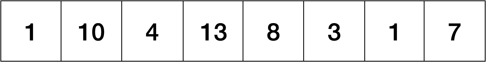- 밀가루 양이 가장 작은 위치에 밀가루 1만큼 더 넣어줍니다.(가장 작은 위치가 여러개라면 모두 넣기) 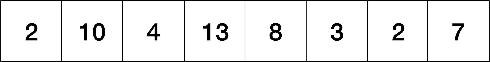
- 도우를 말아줍니다.
- 도우를 꾹 눌러줍니다.
- 도우를 두 번 반으로 접어줍니다.
- 3의 과정만 한번 더 반복합니다. 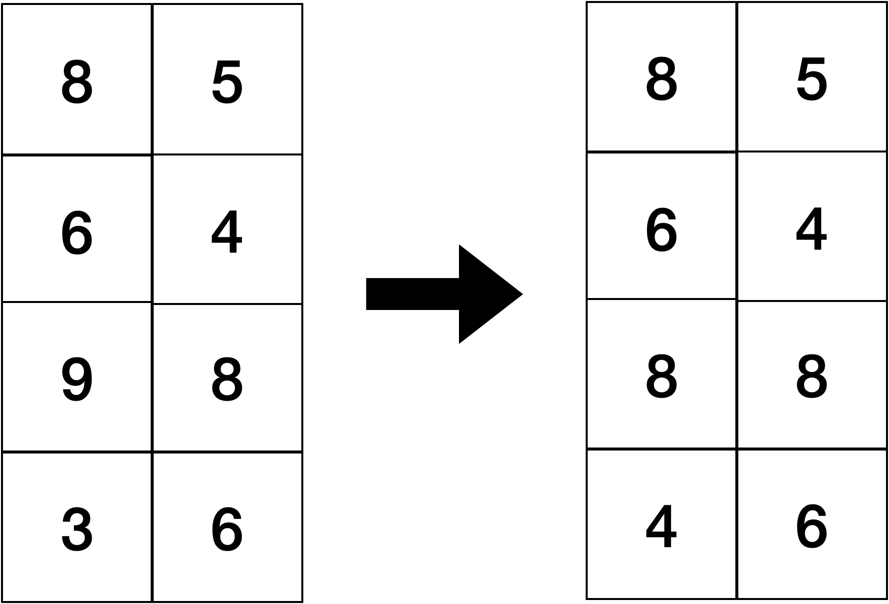
먼저 맨 처음 위치부터 하나씩 접어서 위로 올려줍니다. 다음 그림과 같은 순서대로 도우를 말아서 올려줍니다.
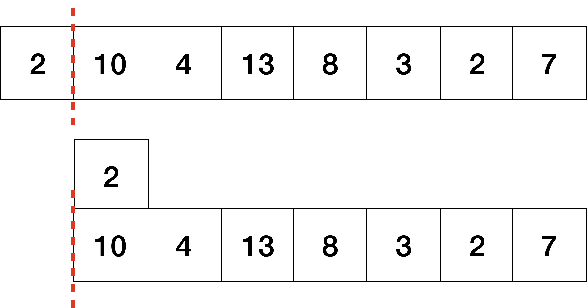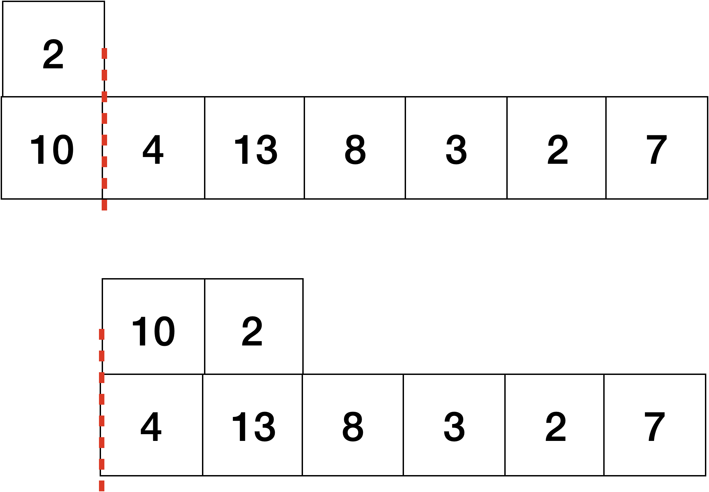
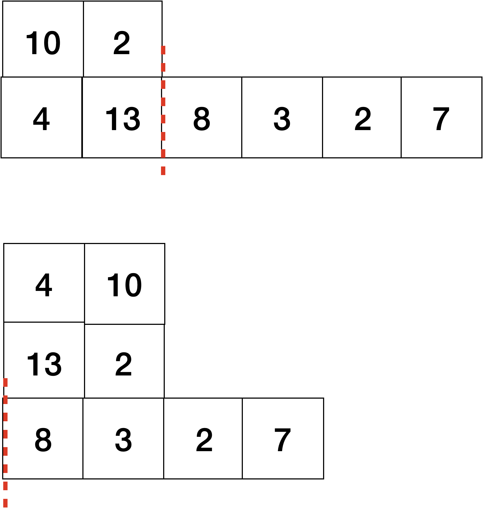
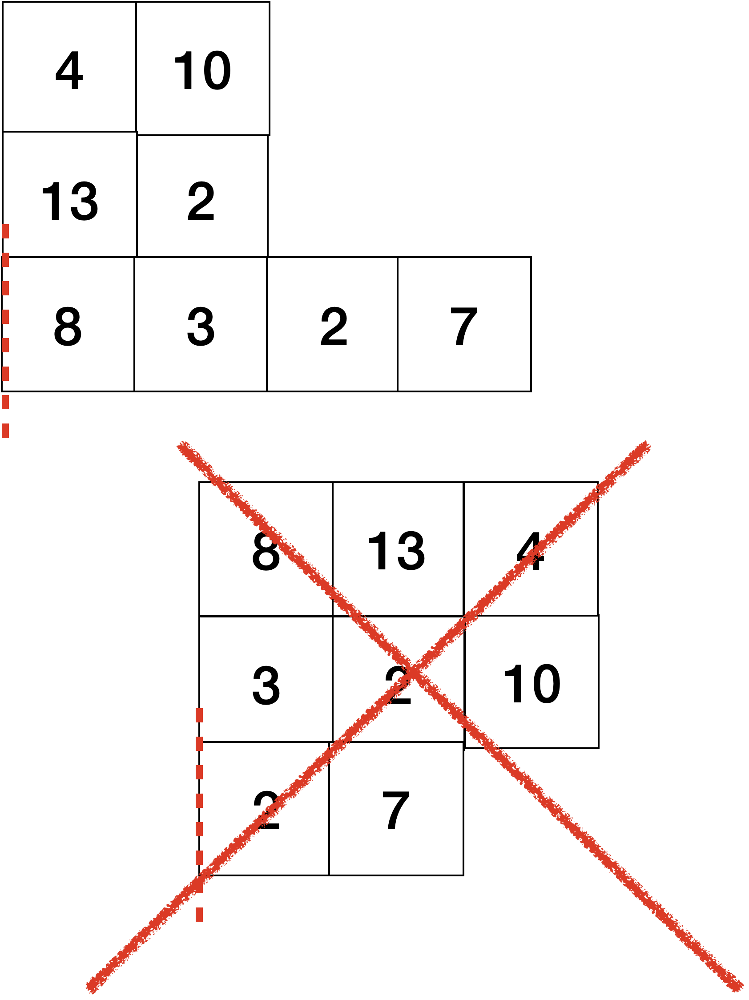
도우를 말 때 바닥에 있는 밀가루보다 위에 있는 밀가루의 너비가 더 넓으면 중단합니다.
각 위치에 상하좌우로 인접한 두 밀가루의 양을 a, b라고 할 때, ∣a−b∣를 5로 나눴을 때의 몫을 d라고 해봅시다. a와 b 중 크기가 큰 값에 d를 빼주고, 크기가 작은 값에는 d를 더해줍니다. 모든 위치의 밀가루에서 진행되며 이 과정은 동시에 진행됩니다.
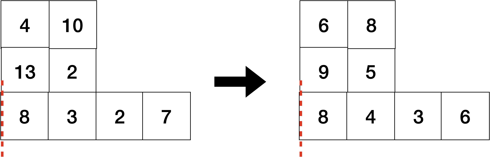이 모양이 2차원 격자 위에 놓여있었다고 생각해봅시다. 그랬을 때 열이 작은 것 부터 먼저 나열하며, 열이 같다면 행이 작은 것 부터 순서대로 좌측에 배치하는 작업을 진행합니다. 이 과정을 거쳐 도우는 다시 1자 모양으로 쭉 펴지게 됩니다.
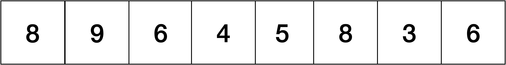다음 그림과 같이 반으로 두 번 접어줍니다.
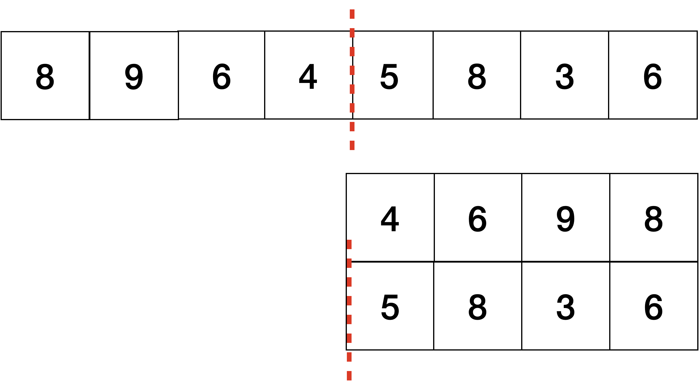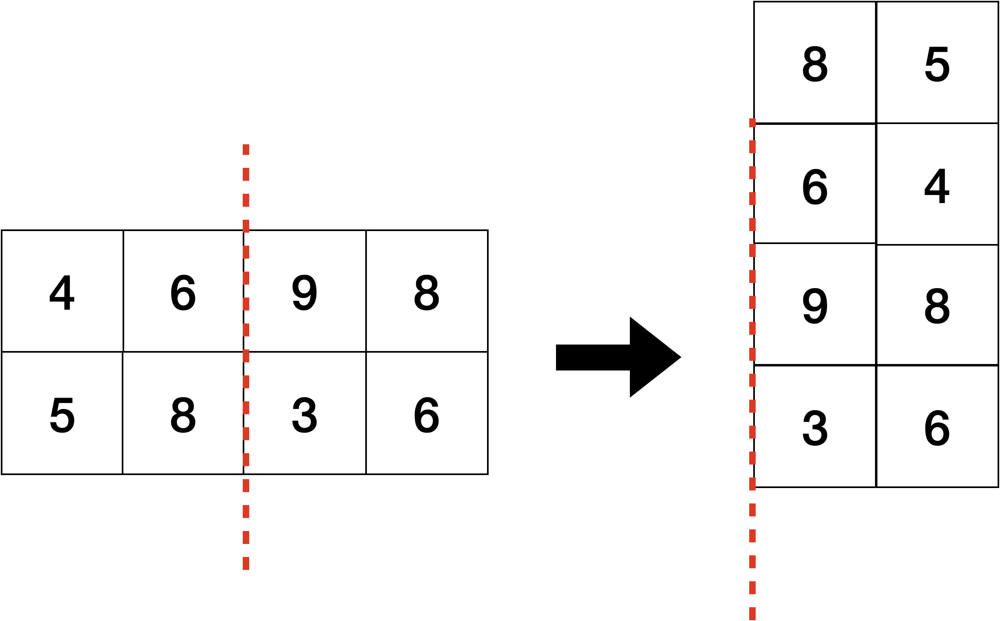
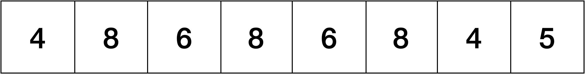
이렇게 1~5 과정을 수행하는 것을 1회 라고 했을 때, 각 위치의 밀가루 양의 최댓값과 최솟값의 차이가 k 이하가 될 때까지 반복한다고 하려고 합니다. k 이하가 되기 위한 최소 반복 횟수를 구하는 프로그램을 작성해보세요.
입력 형식
첫째줄에는 밀가루 양이 담긴 배열의 크기 n, 최댓값과 최솟값의 차이 k가 공백을 사이에 두고 주어집니다. 그 다음 줄에는 n개의 밀가루의 양이 공백을 사이에 두고 주어집니다.
- 1 ≤ n ≤ 100
- 0 ≤ k ≤ 5
- 1 ≤ (밀가루의 양) ≤ 3000
- n은 4의 배수입니다.
출력 형식
밀가루의 양의 최댓값과 최솟값의 차이가 k 이하가 되는 최소 연산 횟수를 출력하세요.
입출력 예제
예제 1
입력 :
8 4
1 10 4 13 8 3 1 7
출력 :
1
예제 2
입력 :
8 2
1 10 4 13 8 3 1 7
출력 :
3
제한
시간제한 : 1000ms
메모리 제한 : 80MB